프롬프트는 10%, 나머지 90%는 하네스
Opus 5.5가 나온 뒤 X에는 제품 출시 영상, Figma 디자인을 움직이게 만든 영상, 손이 많이 간 캐릭터 애니메이션이 쏟아졌어요. 함께 돌아다니는 말은 '15분 걸렸다', '프롬프트 하나였다' 같은 것이고요.
영상 초반 장면이 바로 그 이야기를 풀어요. 왼쪽 위 작은 카드 두 장에 '15분', '프롬프트 1개'가 적혀 있고, 사람들은 그걸 보고 'make me a viral launch video, cinematic, 4k' 한 줄을 입력해요. 이렇게 해서 나오는 건 대개 그라데이션 위에 가운데 정렬 글자가 떠 있는 뻔한 영상이에요.
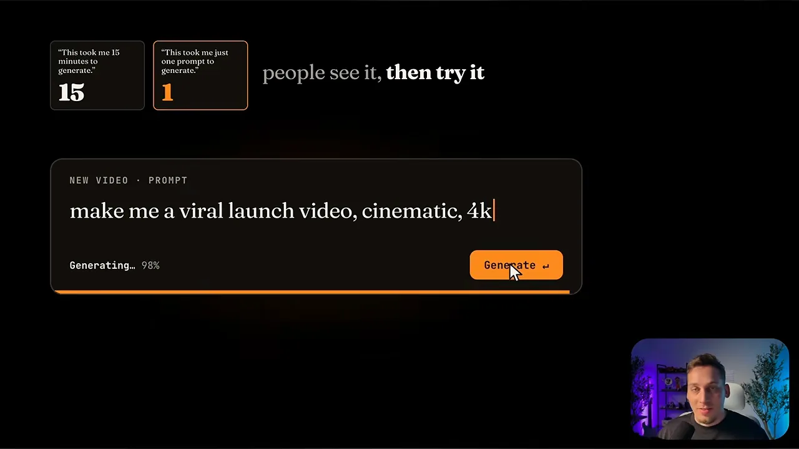
발표자는 결과를 두 덩어리로 나눠요. 프롬프트가 정하는 건 10%뿐이고, 나머지 90%는 모델을 둘러싼 규칙·자료·검토 절차, 곧 하네스가 정해요. 영상 전체가 이 90%를 어떻게 채우는지에 관한 이야기예요.
그 90%는 영상에서 한 번에 나오지 않고 단계별로 쌓여요. 아래 그림은 이 문서가 따라갈 순서예요. 각 단계는 앞 단계의 결과 위에 규칙이나 자료를 하나씩 더해요.
Opus 5.5가 영상을 만드는 네 가지 길
먼저 짚을 사실이 있어요. Opus 5.5는 글과 이미지를 받아 글을 돌려주는 모델이라 MP4 파일을 직접 만들지 못해요. 대신 코드를 쓰고, 그 코드가 영상을 만들어요.
슬라이드는 이 과정을 한 장에 그려요. 왼쪽 'Your brief(글 + 레퍼런스)'가 가운데 'Opus 5.5 writes code'로 들어가고, 오른쪽 MP4로 가는 길이 A~D 네 갈래로 나뉘어요.
프레임워크를 따로 말하지 않으면 모델은 A를 골라요. 발표자가 인용한 Tommy D. Rossi는 Opus 5.5가 모든 코드를 index.html 하나에 넣고, Playwright로 헤드리스 창에서 한 프레임씩 찍은 다음 FFmpeg로 MP4를 만들었다고 했어요. Remotion 같은 도구 대신 의존성 없이 처음부터 짜는 걸 좋아하는 것 같다는 관찰도 덧붙였고요.
기본 상태로 한 번 만들어 보기
시작은 간단해요. Claude 데스크톱 앱에서 작업 폴더로 쓸 새 폴더를 만들고, 모델은 Opus 5.5, effort는 high로 골라요. 그리고 '해가 뜨고 구름이 몰려와 비가 내리고 기온이 떨어지는 10초짜리 날씨 앱 영상'을 시켜요.
결과 화면에는 샌프란시스코 날씨 카드가 27°에서 시작하고, 아래 시간대별 예보가 24°에서 14°로 내려가요. Claude가 영상 아래에 0~3초 일출, 3~5.3초 구름, 5.4~10초 비처럼 구간별로 무엇이 일어나는지 정리해 준 것도 보여요.
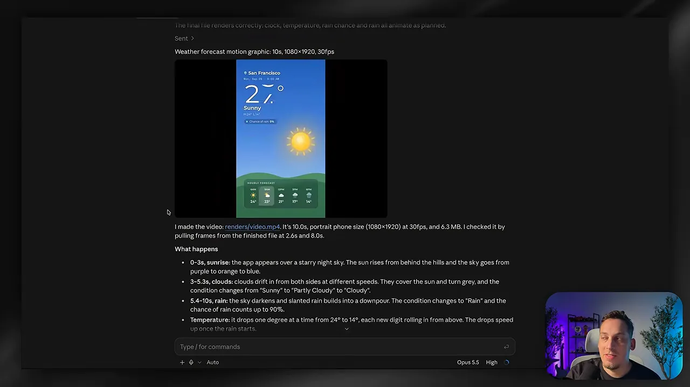
같은 프롬프트를 Codex에 주자 HyperFrames로 만든 결과가 나왔어요. 화면 가운데 미리보기에는 'A day in motion.' 제목과 24°만 덩그러니 있어요. 발표자는 두 앱 모두에 HyperFrames를 깔아 뒀지만, Claude Code는 프레임워크 대신 직접 코드를 짜는 쪽을 골랐다고 말해요.
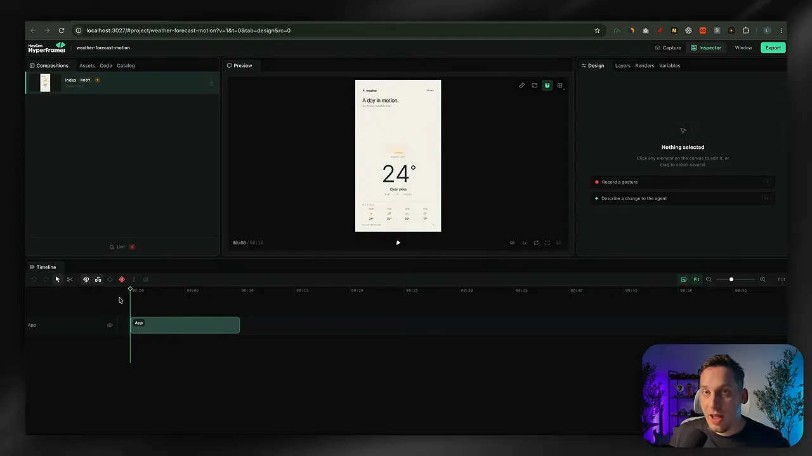
그래도 프레임워크를 쓰고 싶다면 Claude 설정의 커넥터에서 HyperFrames를 검색해 설치하고 계정을 인증하면 돼요. Remotion은 Claude Code 플러그인으로 설치해요.
모션 스튜디오 규칙과 한 줄 프롬프트
이제 새 프로젝트에서 처음부터 다시 해요. 발표자는 Movez(@0xMovez)의 X 글에서 '모션 스튜디오 규칙'을 복사해 첫 메시지로 붙여 넣어요. 이 글은 영상 전체 리서치에 큰 역할을 했다고 해요.
화면의 코드 블록은 네 개의 제목으로 나뉘어 있어요. Render contract, Look, Sound, 그리고 맨 아래 'Loop before you show me anything'이에요.
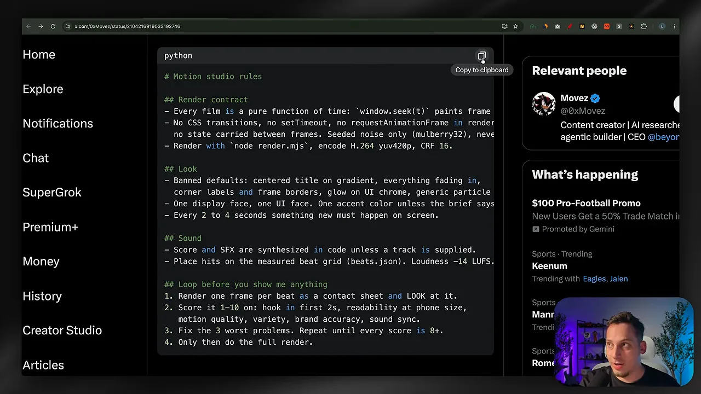
글씨가 작으니 내용을 우리말로 옮겨 볼게요.
| 묶음 | 화면에 적힌 규칙 | 막으려는 것 |
|---|---|---|
| 렌더 계약 | 영상은 시간의 순수 함수예요. window.seek(t)가 프레임을 그려요. CSS 트랜지션·setTimeout·requestAnimationFrame을 쓰지 않고, 프레임 사이에 상태를 넘기지 않아요. 노이즈는 시드 고정(mulberry32)만 써요. node render.mjs로 H.264, CRF(Constant Rate Factor) 16으로 인코딩해요 | 렌더할 때마다 결과가 달라지거나 프레임이 튀는 일 |
| 룩 | 그라데이션 위 가운데 제목, 전부 페이드인, 구석 라벨과 프레임 테두리, UI 글로우, 흔한 파티클을 금지해요. 디스플레이 서체 하나, UI 서체 하나, 강조색 하나만 써요. 2~4초마다 화면에 새로운 일이 일어나야 해요 | 누가 봐도 AI(Artificial Intelligence)가 만든 듯한 뻔한 결과 |
| 사운드 | 음원이 따로 없으면 음악과 효과음을 코드로 합성해요. 측정한 비트 그리드(beats.json)에 소리를 놓고, 음량은 -14 LUFS(Loudness Units relative to Full Scale)로 맞춰요 | 화면과 따로 노는 소리 |
| 보여 주기 전 루프 | 비트마다 한 프레임을 콘택트 시트로 렌더해 직접 봐요. 첫 2초의 훅, 휴대폰 크기 가독성, 움직임, 다양성, 브랜드 정확도, 소리 싱크를 1~10점으로 매기고 가장 나쁜 3개를 고쳐요. 모든 점수가 8 이상일 때만 전체 렌더를 해요 | 한 번 뽑고 끝내는 결과 |
한 줄 프롬프트도 뜯어 보면 설계가 있어요
규칙을 넣은 뒤 발표자는 Stephan Livera의 사례에 쓰인 한 줄 프롬프트를 그대로 시켜 봐요. '네가 얼마나 대단한 모션 디자이너인지 보여 주는 15초 모션 그래픽 영상을 만들어. 이력서용 쇼릴처럼. 끝까지 가 봐.'
화면에는 이 문장을 네 조각으로 나눠 왜 먹히는지 설명한 글이 떠 있어요. 굵게 표시된 따옴표 부분이 각 조각이에요.
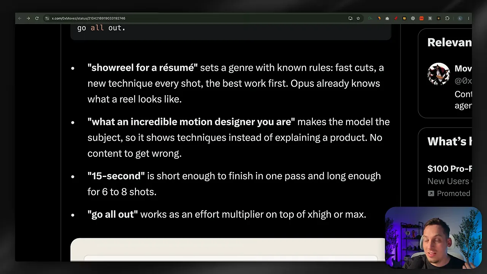
| 구절 | 하는 일 |
|---|---|
| 이력서용 쇼릴 | 빠른 컷, 매 컷 새 기법, 가장 좋은 것부터 같은 규칙이 정해진 장르를 골라 줘요 |
| 네가 얼마나 대단한 모션 디자이너인지 | 모델 자신을 주제로 삼아요. 제품을 설명하는 대신 기법을 보여 주니 내용을 틀릴 일이 없어요 |
| 15초 | 한 번에 끝낼 만큼 짧고, 6~8컷을 넣을 만큼 길어요 |
| 끝까지 가 봐(go all out) | xhigh나 max effort 위에 한 번 더 얹는 노력 배수처럼 작동해요 |
결과는 움직임도 많고 전환도 다양하고 아트 디렉션도 여러 번 바뀌어요. 하지만 화면 오른쪽 결과처럼 전부 검정 바탕에 주황색이에요. Claude를 주제로 삼았으니 Claude의 색을 따른 거예요.
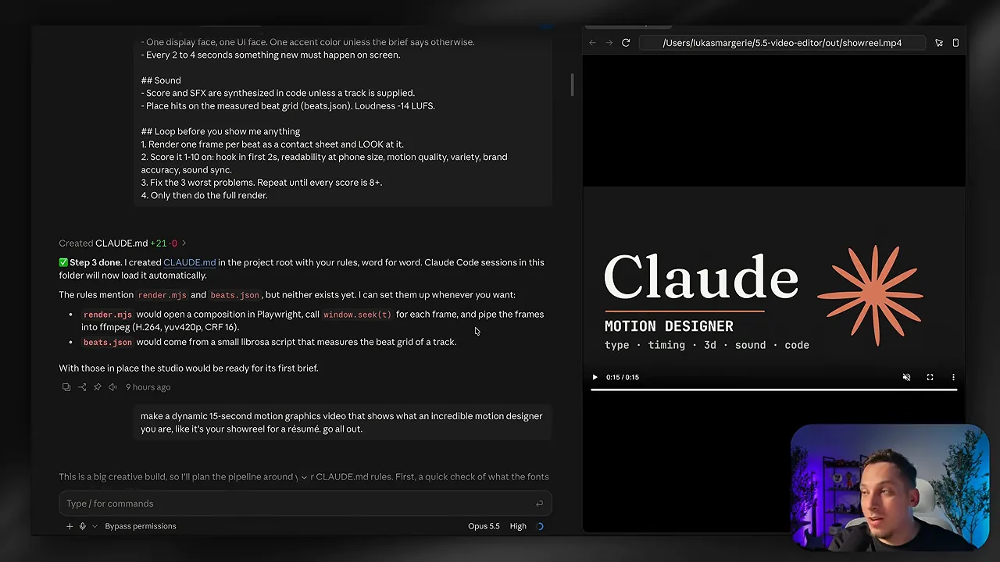
진짜 브랜드 입히기
이번엔 내 브랜드나 고객 브랜드를 넣어 볼 차례예요. 발표자는 MagicPath를 예로 써요. Codex와 Claude Code에 붙여 쓰는 무한 캔버스 디자인 도구예요. 첫 화면에 'The visual layer for all your agent work'라는 문구와 캔버스 위 여러 화면이 보여요.
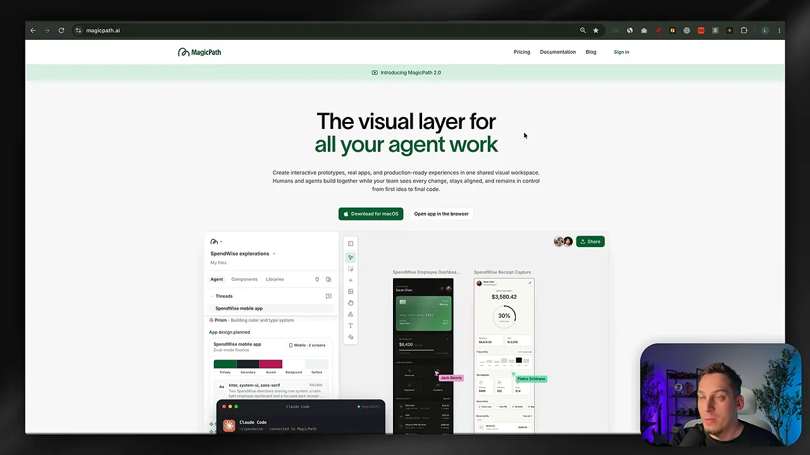
앞과 같은 쇼릴 프롬프트에 '주제는 MagicPath'만 바꿔 넣자, 무한 캔버스 화면을 보여 주고 다크·라이트 모드를 오가며 기능을 훑은 뒤 로고로 끝나는 영상이 나왔어요. 앞 결과의 연출 규칙은 그대로 두고 브랜드만 바꾼 셈이에요.
자산은 모델이 직접 모으게 해요
Tony Dinh의 글이 이 단계의 요점을 보여 줘요. 화면 속 글에는 '1년 전엔 이런 영상에 1,000달러쯤 냈는데, 이제 Opus 5.5로 30분도 안 걸려 만들었다'고 적혀 있어요.
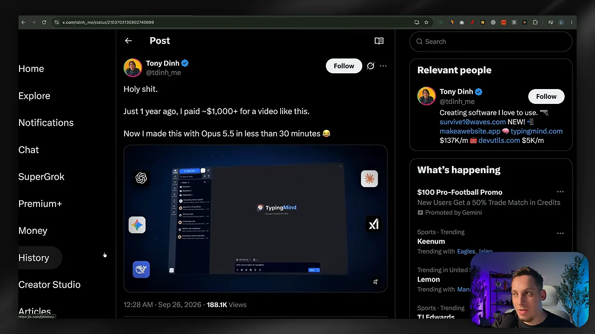
Movez의 글에는 이 리서치까지 맡기는 템플릿 프롬프트가 있어요. 대괄호로 된 자리표시자 [PRODUCT], [URL], [METRIC], [CTA]만 내 것으로 바꾸면 돼요.
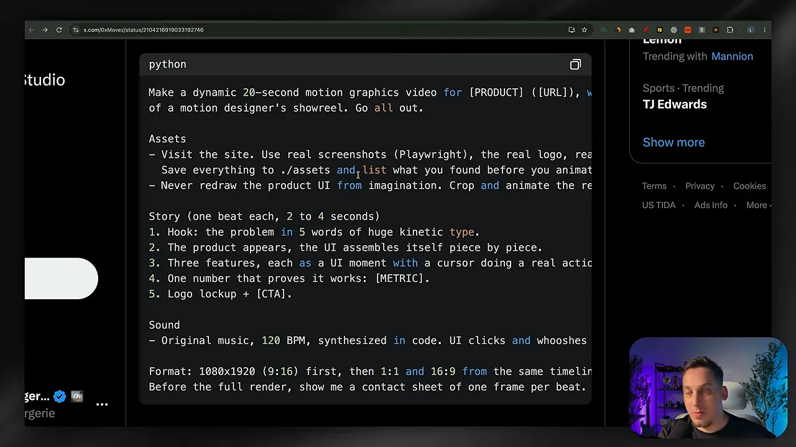
템플릿의 구조는 이래요.
- 자산: 사이트를 방문해 Playwright로 실제 스크린샷, 진짜 로고, 색, 폰트를 모아요. 전부 ./assets에 저장하고, 애니메이션 전에 무엇을 찾았는지 목록부터 보여 줘요.
- 이야기: 박자 하나에 2~4초씩, 다섯 박자예요. 문제를 큰 글자 다섯 단어로 던지고, 제품 UI가 한 조각씩 조립되고, 커서가 실제로 조작하는 기능 셋을 보여 주고, 효과를 증명하는 숫자 하나, 마지막에 로고와 CTA(Call To Action)예요.
- 사운드와 형식: 120 BPM(Beats Per Minute) 음악을 코드로 합성하고 UI 클릭과 우쉬를 넣어요. 1080×1920(9:16)부터 만들고 같은 타임라인에서 1:1과 16:9를 뽑아요. 전체 렌더 전에 비트마다 한 프레임씩 콘택트 시트를 보여 줘요.
결과는 웹사이트에서 가져온 스크린샷과 처음부터 만든 애니메이션이 섞인 20초짜리 제품 설명 영상이에요. 발표자는 다른 세션에서 두 문장짜리 짧은 지시로도 해 봤는데, 화면처럼 대시보드 카드와 'Deep Work' 같은 실제 UI가 격자로 깔리는 비슷한 스타일이 나왔어요.
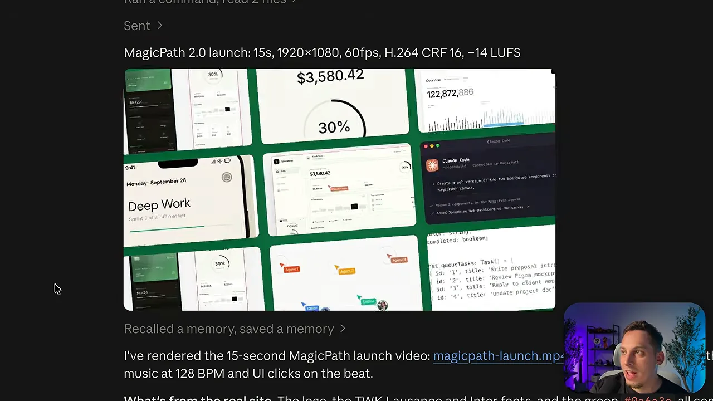
발표자는 이어서 같은 템플릿에 자기 목소리 내레이션을 입힌 버전도 보여 줘요. 화면 설계는 같고, 사람 목소리가 기능을 설명해요.
레퍼런스 영상의 문법만 가져오기
다음 단계는 Opus 5.5에게 따라 할 레퍼런스를 주는 거예요. 발표자는 Opus 5.5로 만든 영상을 모아 둔 사이트를 소개해요. 'Discover startup launch videos from X'라는 제목 아래 영상 썸네일이 격자로 깔려 있고, 하나를 누르면 X의 원래 글로 이동해요.
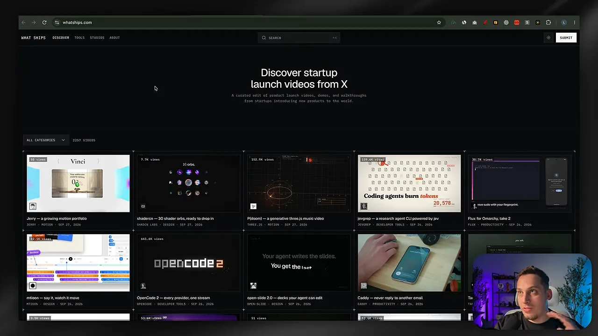
발표자가 고른 건 mtioon이라는 회사의 출시 영상이에요. 화면 속 글에는 'Opus 5.5와 mtioon으로 프롬프트 하나에 만들었다'고 적혀 있고, 둥근 주황 폴더와 알약 모양 태그가 떠다녀요. 발표자는 이 경쾌한 스타일, 색, 폰트, 움직임이 마음에 들었다고 해요.
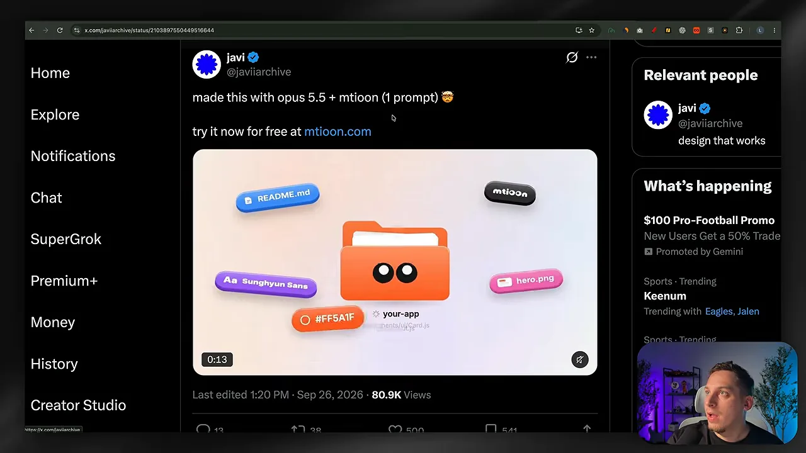
프롬프트는 네 단계로 짜여 있어요. 화면 위쪽 말풍선이 발표자가 보낸 지시이고, 아래는 Claude가 레퍼런스를 내려받아 30프레임을 뽑고 전환과 색을 공부하는 진행 기록이에요.
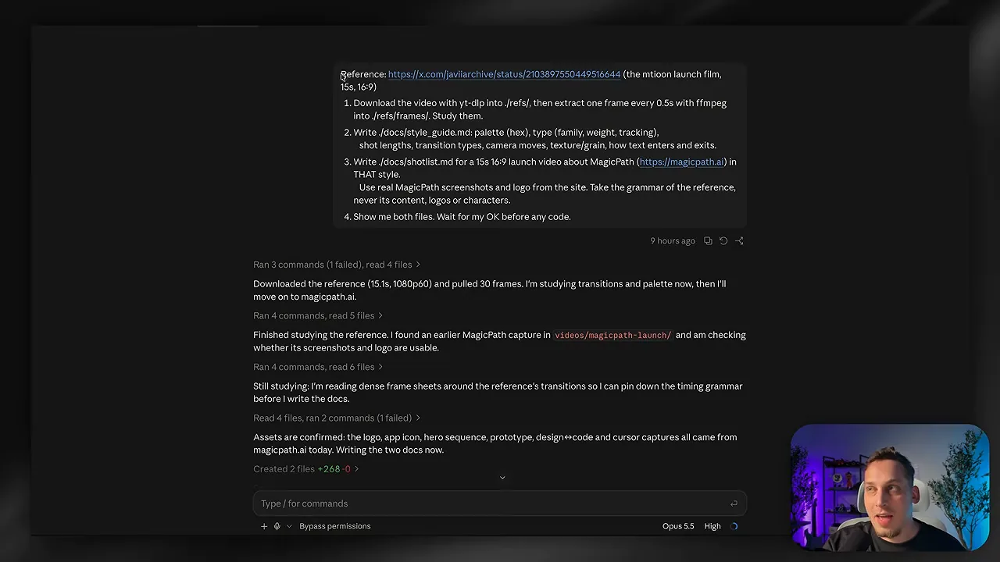
- 영상을 내려받고 0.5초마다 프레임을 뽑아요 — yt-dlp로 받고 ffmpeg로 프레임을 뽑아 공부하게 해요.
- style_guide.md를 써요 — 색(hex), 서체(패밀리·굵기·자간), 컷 길이, 전환 방식, 카메라 움직임, 질감과 그레인, 글자가 들어오고 나가는 방식까지 적어요.
- shotlist.md를 써요 — 그 스타일로 MagicPath 15초 16:9 출시 영상의 컷 목록을 짜요. 사이트의 실제 스크린샷과 로고를 써요.
- 두 파일을 보여 주고 승인을 기다려요 — 승인 전에는 코드를 쓰지 않아요.
여기서 가장 중요한 문장은 이거예요.
Take the grammar of the reference, never its content, logos, or characters.
레퍼런스의 문법은 가져오되, 내용·로고·캐릭터는 절대 가져오지 마세요.
— 영상 11:35
결과는 레퍼런스 스타일로 만든 MagicPath 영상이에요. 레퍼런스가 보여 주던 타임라인 화면 대신 MagicPath의 실제 화면이 들어갔어요. 발표자는 레퍼런스와 이 구체적인 프롬프트를 함께 줄 때 Opus 5.5가 특히 잘한다고 평가해요.
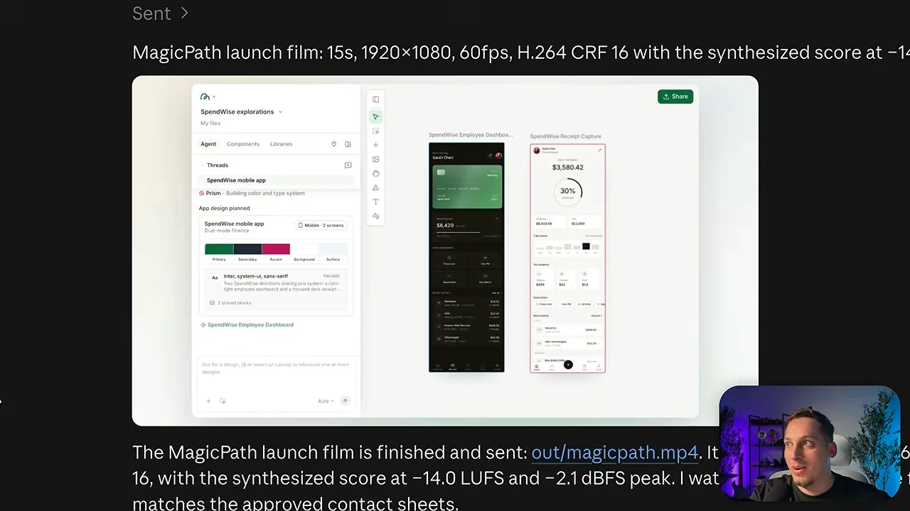
결과를 일관되게 유지하려면 이렇게 Claude가 마크다운 파일을 남기게 하는 게 좋아요. 브랜드, 스타일, 문법, 말투를 파일로 적어 두면 다음 작업에서 그 파일로 돌아가 기억을 되살릴 수 있어요.
스펙 목록, 비트 그리드, 소리에 맞춘 편집
마크다운 스타일 가이드와 함께 필요한 게 스펙 목록이에요. 영상에 나올 UI 상태들, 예를 들어 버튼·로더·체크 표시·차트를 미리 정해 두는 거예요.
슬라이드 위쪽에 'One element · size, radius and fill change · never cut'이라고 적혀 있어요. 버튼 하나가 로더, 체크, 플레이어, 차트, 검색창으로 차례로 모양을 바꾸고, 마지막엔 다시 버튼으로 돌아와 끊김 없이 반복돼요.
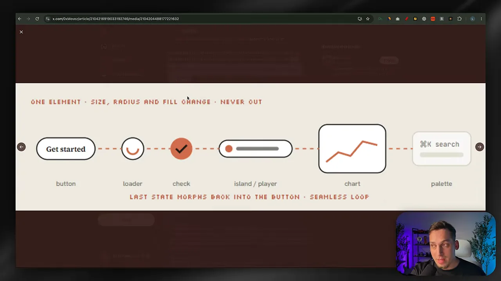
이 스타일을 얻는 브리프는 태그로 나뉜 다섯 덩어리예요. 화면에 보이는 <direction>, <structure>, <build>, <gotchas>가 그 일부예요.
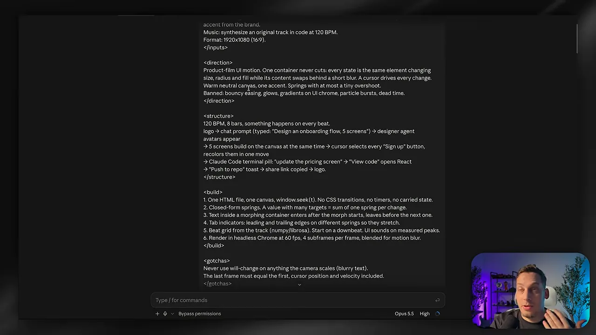
- 입력: 무슨 제품인지, 그리고 로고·브랜드 색·폰트·UI 스크린샷처럼 제품에서 가져올 것.
- 방향: 만들 영상의 종류. 여기서는 '제품 필름 UI 모션. 컨테이너 하나가 끊기지 않고, 모든 상태는 같은 요소가 크기·모서리·색을 바꾸며 내용은 짧은 블러 뒤에서 바뀐다'예요. 이 문장은 레퍼런스를 주고 Claude Code에게 써 달라고 해도 돼요.
- 구조: 120 BPM, 8마디, 박자마다 무언가 일어나요. 로고 → 채팅 프롬프트 → 다섯 화면이 동시에 지어짐 → Claude Code 터미널 → 로고 순서예요.
- 빌드: HTML 파일 하나, 캔버스 하나,
window.seek(t). 스프링 애니메이션, 곡에서 뽑은 비트 그리드, 60fps 헤드리스 Chrome 렌더 같은 구현 규칙이에요. - 주의할 점: 카메라가 확대하는 요소에 will-change를 쓰지 말 것(글자가 흐려져요), 마지막 프레임은 커서 위치와 속도까지 첫 프레임과 같을 것.
코드 전에 비트 그리드부터 받아요
브리프 끝에는 '코드를 쓰기 전에 비트 그리드 위의 상태 목록부터 보여 줘'라는 요청이 붙어요. 그러면 Claude가 표 하나를 먼저 내놓아요. 화면의 표는 왼쪽부터 비트 번호, 초, 장면, 화면에서 일어나는 일, 커서 동작, 효과음 열이에요. 예를 들어 5.4박(9.5초)에는 '다섯 버튼이 한 번의 스프링으로 강조색으로 채워짐'과 'hit' 소리가 짝지어져 있어요.
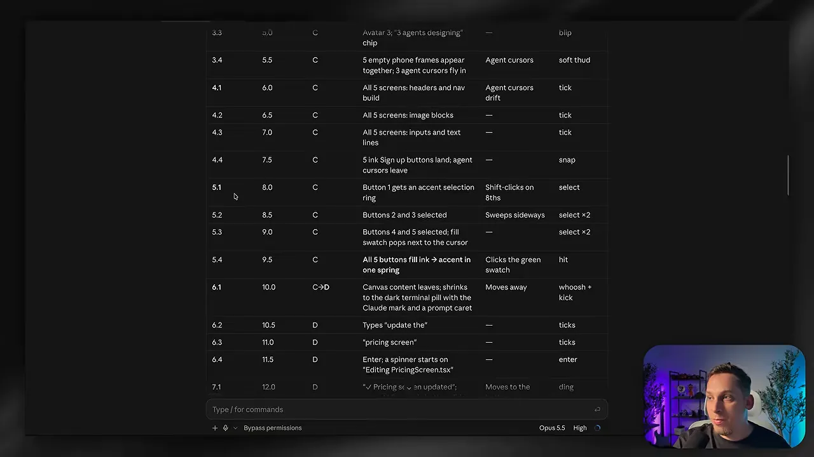
렌더 결과는 16초, 1080p60, 120 BPM 8마디에 맞춘 끊김 없는 반복 영상이에요. 화면처럼 휴대폰 화면 네 개의 Sign up 버튼이 동시에 선택돼요. 발표자는 이 브리프도 Movez의 글에 있다고 말해요.
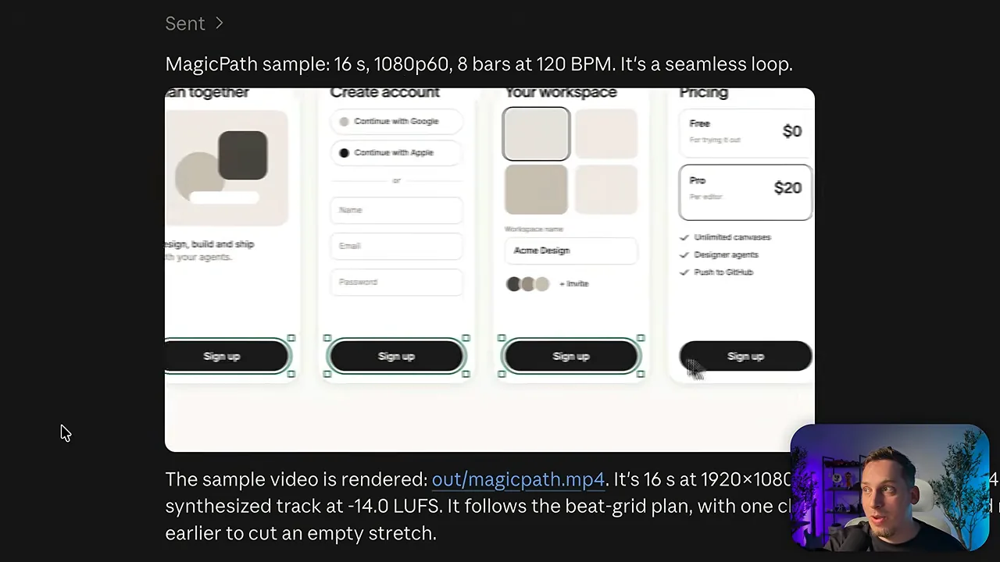
소리를 같은 타임라인에 올리기
발표자가 소개한 Onur Ozcan의 스티브 잡스 이야기 영상은 귀를 기울이면 모든 움직임이 소리에 맞춰져 있어요. 화면에는 1955년 금문교 앞의 어린 잡스와 'Born, then adopted.' 제목이 보여요.
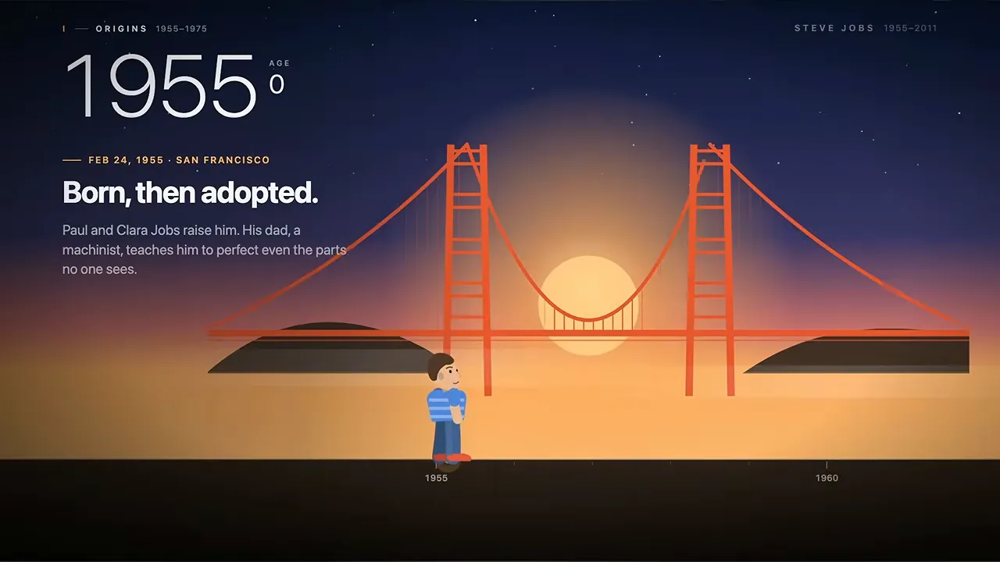
구조는 다음 슬라이드가 보여 줘요. 'One timeline, three lanes · 8 seconds at 120 BPM'이라는 제목 아래 Music, SFX(Sound Effects), Picture 세 줄이 있어요. 음악 줄의 세로 눈금이 비트, SFX 줄의 점(thump·click·whoosh·pop)이 효과음, 아래 Picture 줄의 칸(title slams, UI assembles, feature 1, feature 2)이 화면 장면이에요.
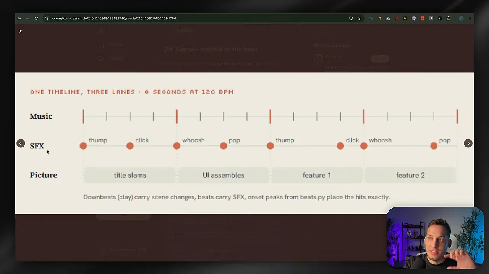
이걸 MagicPath 영상에 적용한 프롬프트가 화면 위쪽 말풍선이에요. 네 단계로 정리하면 이래요.
- 120 BPM 원곡을 코드로 합성해요 — 화면과 같은 타임라인 위에서 만들고, 흔한 신스 패드는 피해요.
- beats.py로 곡을 측정해요 — numpy와 librosa로 beats.json을 만들어요. BPM, 비트, 다운비트(4박마다), 히트(소리가 튀는 지점)가 들어가요.
- sfx.mjs로 UI 효과음을 합성해요 — 커서를 누를 때마다 클릭, 컨테이너가 변할 때마다 우쉬, 로고에 쿵.
- 애니메이션 타이밍을 beats.json에 다시 맞추고 음악과 효과음을 섞어 MP4로 묶어요.
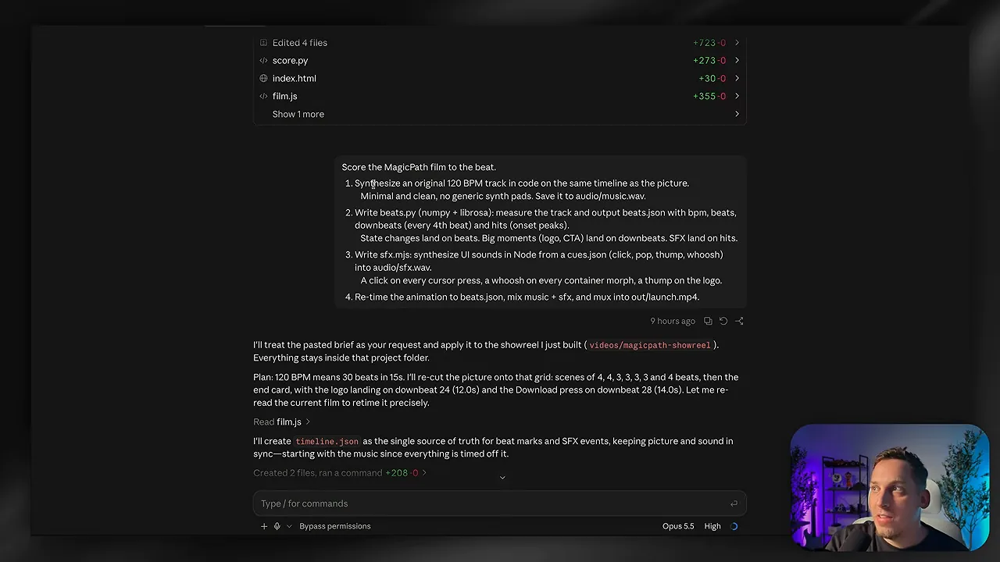
새 버전은 글자가 뜰 때마다, 전환이 일어날 때마다 소리가 붙어요. 발표자는 이게 앞 버전보다 꼭 낫다고는 하지 않아요. 실험해 볼 만한 방향이라는 정도예요. 다른 사례에서는 이 방식이 영상과 잘 어울렸다고 덧붙여요.
감독 브리프와 비평 루프, 그리고 스킬
발표자가 가장 좋아하는 사례는 donald(@donaldjewkes)의 영상이에요. 그는 '컴퓨터에 5분 동안 말했고, Claude가 12시간 일했고, 일어나 보니 이게 있었다'고 썼어요. 댓글에 공개한 프롬프트는 여러 문단에 수천 자예요.
그 프롬프트를 읽어 보면 뼈대가 보여요. 발표자는 이걸 감독 브리프라고 불러요. 영상에서는 12개 항목이라고 말하는데, 화면에 정리된 목록에는 아래 아홉 항목이 보여요.
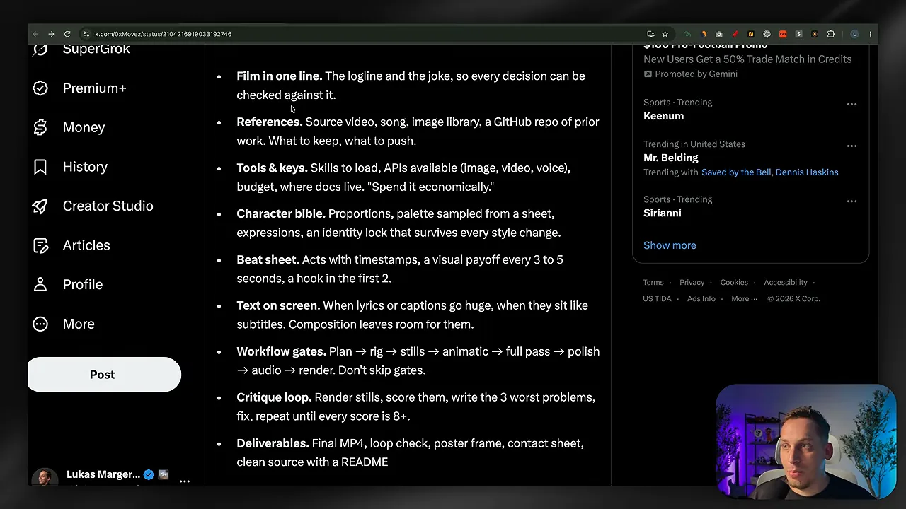
| 항목 | 화면에 적힌 내용 |
|---|---|
| 한 줄 요약 | 로그라인과 농담 하나. 모든 결정을 여기에 비춰 확인해요 |
| 레퍼런스 | 원본 영상, 노래, 이미지 모음, 이전 작업의 GitHub 저장소. 무엇을 지키고 무엇을 밀어붙일지 |
| 도구와 키 | 불러올 스킬, 쓸 수 있는 API(이미지·영상·음성), 예산, 문서 위치. '아껴 써' |
| 캐릭터 바이블 | 비율, 시트에서 뽑은 색, 표정, 스타일이 바뀌어도 유지되는 정체성 고정 |
| 비트 시트 | 타임스탬프가 붙은 막 구성, 3~5초마다 시각적 보상, 첫 2초 안의 훅 |
| 화면 글자 | 가사나 자막을 크게 띄울 때와 자막처럼 둘 때. 구도가 글자 자리를 남겨 둬요 |
| 작업 관문 | 계획 → 리그 → 스틸 → 애니마틱 → 전체 패스 → 다듬기 → 오디오 → 렌더. 관문을 건너뛰지 않아요 |
| 비평 루프 | 스틸을 렌더해 점수를 매기고 가장 나쁜 3개를 적어 고치기. 모든 점수가 8 이상이 될 때까지 |
| 납품물 | 최종 MP4, 반복 확인, 포스터 프레임, 콘택트 시트, README가 있는 깔끔한 소스 |
발표자는 캐릭터 바이블을 조금 더 풀어 설명해요. 캐릭터마다 여러 각도, 비율, 감정과 표정을 모아 둔 자료라서 이미지와 문서가 수백 개가 될 수도 있어요. 도구와 키 항목에서는 Seedance 같은 영상 생성 API를 예로 들어요. donald의 영상은 다른 창작자들의 리믹스로도 이어졌어요.
템플릿을 채워 MagicPath에 적용하기
Movez는 이 구조를 템플릿으로 정리했어요. 화면의 프롬프트 첫 줄은 '너는 코드로 만드는 영화의 감독이자 애니메이터, 사운드 디자이너, 렌더 엔지니어다'예요. 그 아래로 한 줄 요약, 레퍼런스와 입력, 룩, 비트 시트가 이어져요.
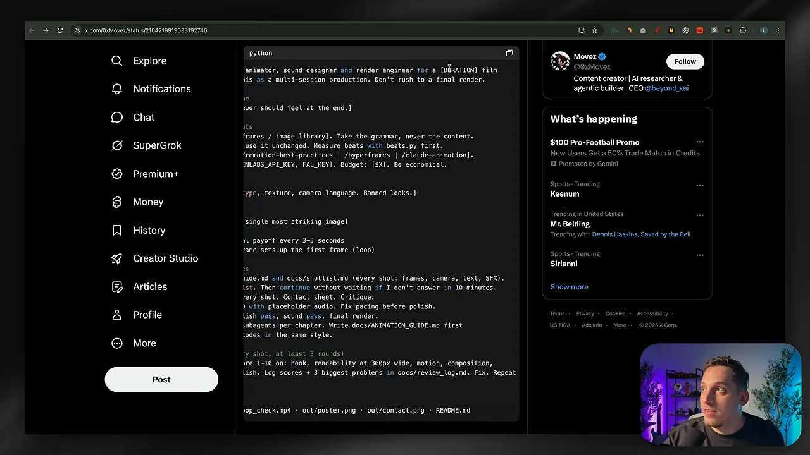
발표자는 이 템플릿에 앞서 쓴 레퍼런스 영상을 넣어 MagicPath 영상을 다시 만들었어요. 화면 위 설명은 '45초 영상, 1080p60, -14 LUFS, 포스터, 비트당 한 프레임 이음매 확인'이에요. 카메라 시점은 하나로 유지되고, 에이전트가 UI를 직접 만드는 모습과 Claude Code 터미널에서 디자인이 코드가 되는 과정이 이어져요. 발표자는 지금까지 결과 중 가장 깔끔하다고 평가해요.
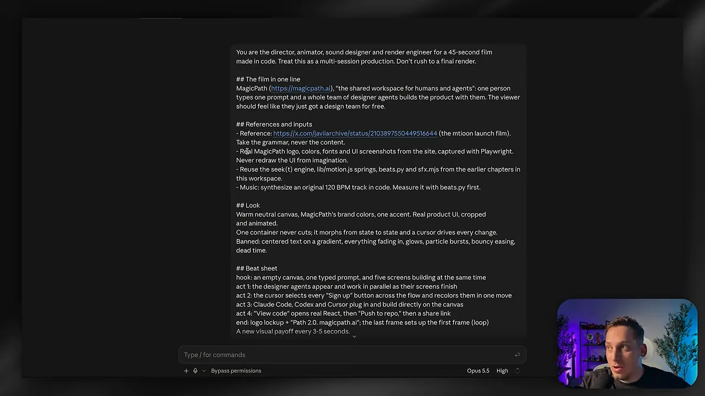
비평 루프: 한 번에 끝내지 않아요
마지막 재료는 비평 루프예요. 슬라이드에는 네 칸이 점선으로 이어져 있어요. 비트마다 스틸 렌더 → ffmpeg로 콘택트 시트 만들기 → 일곱 축으로 1~10점 매기기 → 가장 나쁜 3개를 review_log.md에 적고 고치기. 아래 화살표에는 '모든 점수가 8 이상이 될 때까지 반복'이라고 적혀 있고, 오른쪽 끝에 ship(출시) 칸이 있어요.
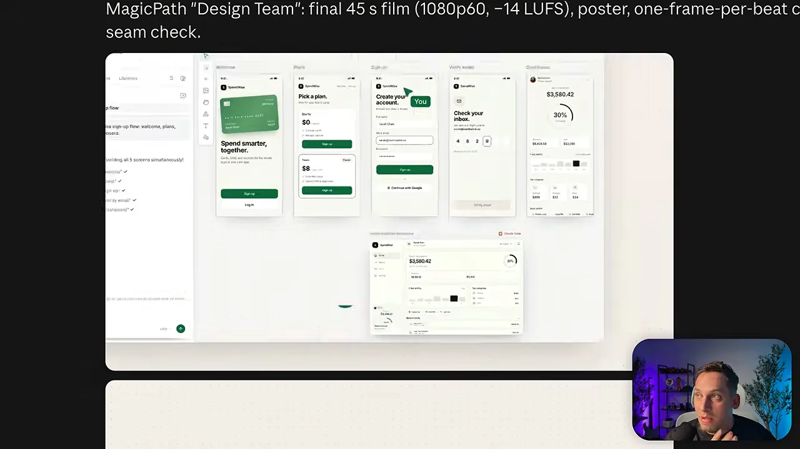
발표자는 앞서 본 공들인 작품이 한 번에 나온 게 아니라고 말해요. 화면 속 글을 보면 정확히는 @mablesjoseph의 수채화 단편이 '163번의 모델 호출과 7시간 가까이 걸렸다'고 밝힌 사례예요. 글은 이렇게 맺어요. 반복은 실패가 아니라 방법이라고요.
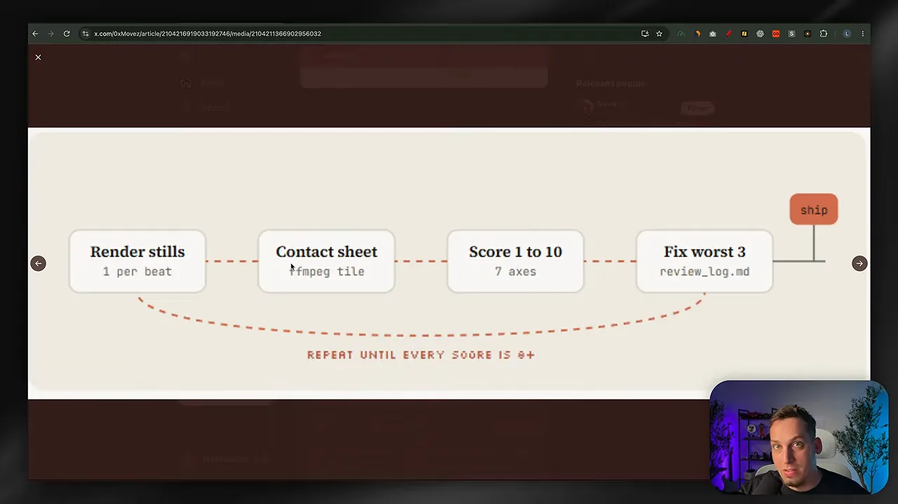
발표자의 데모에서도 라운드마다 점수가 기록돼요. 화면 표의 열은 Hook, 360px 가독성, Motion, Composition, Depth, Sound sync, Polish예요. 1라운드에서 6이던 Depth가 2라운드에 8이 되고, Hook도 7에서 8로 올라요. 표 아래에는 라운드마다 무엇이 문제였고 어떻게 고쳤는지가 적혀 있어요. 1라운드엔 전부 평면 2D였고 휴대폰에서 읽기 어려운 장면이 있어서, 원근감과 모션 블러를 넣었다는 식이에요.
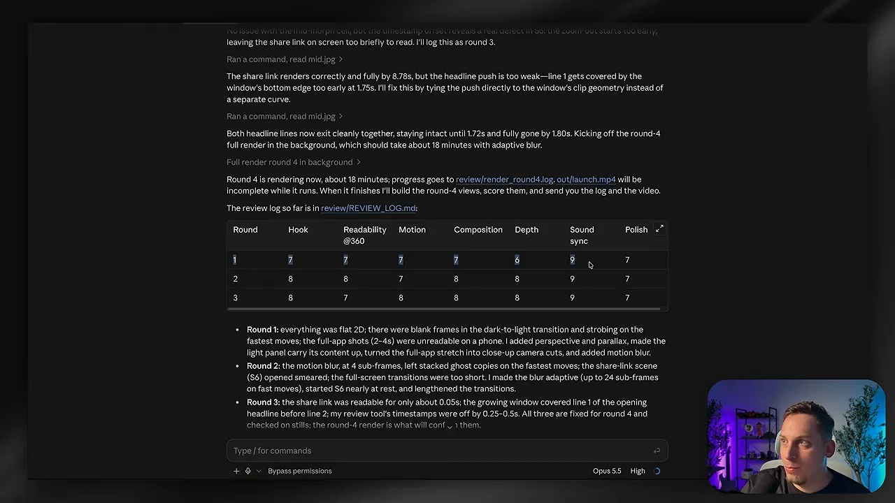
다 됐으면 스킬로 묶어요
마지막 단계는 이 과정을 다시 쓸 수 있게 포장하는 거예요. 발표자는 두 가지 길을 보여 줘요. 하나는 서비스예요. 앞에서 본 영상을 만든 Chain은 '내 제품용 모션 그래픽 영상'을 69달러에 팔고 있어요.
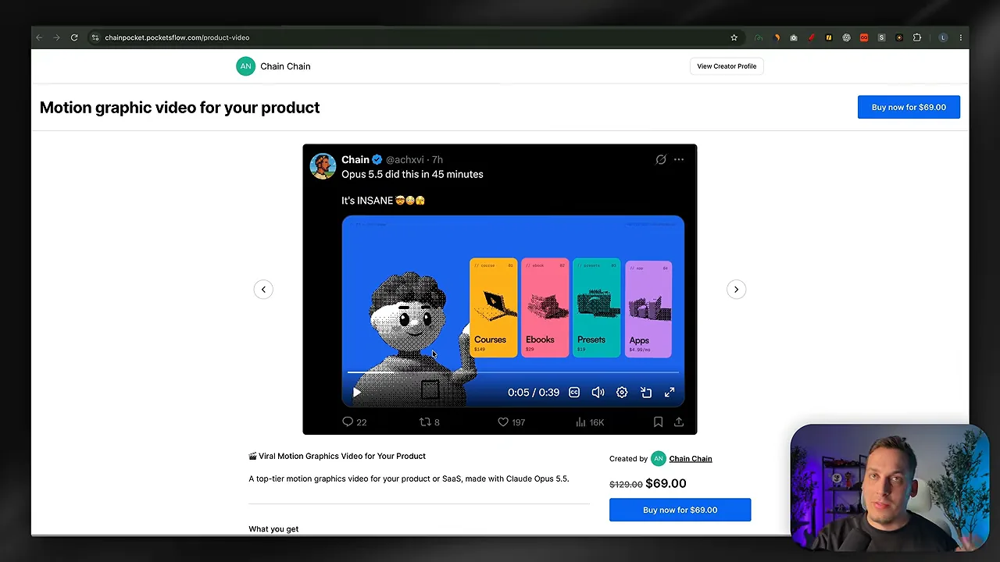
다른 하나는 스킬이에요. 화면의 Motion reel 스킬은 세 부분으로 되어 있어요. 먼저 모을 입력(제품과 URL(Uniform Resource Locator), 길이, 화면비, 브랜드 색, 레퍼런스, 음악), 여덟 단계 파이프라인(자산 수집 → 스타일 가이드 → 비트 측정 → 숏리스트 승인 → 빌드 → 콘택트 시트와 비평 → 렌더와 믹스 → 납품), 그리고 어기면 안 되는 규칙(실제 제품 UI만, 화면 지어내기 금지, Math.random·타이머·CSS 트랜지션 금지)이에요.